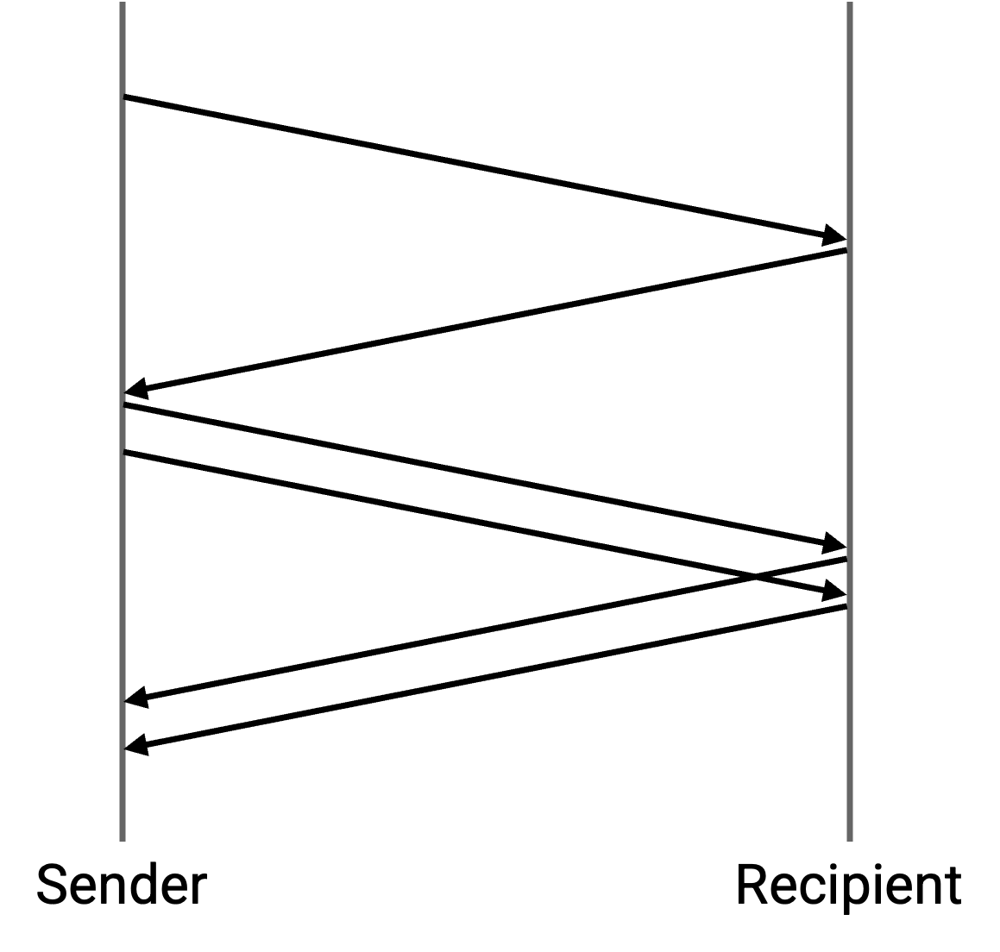
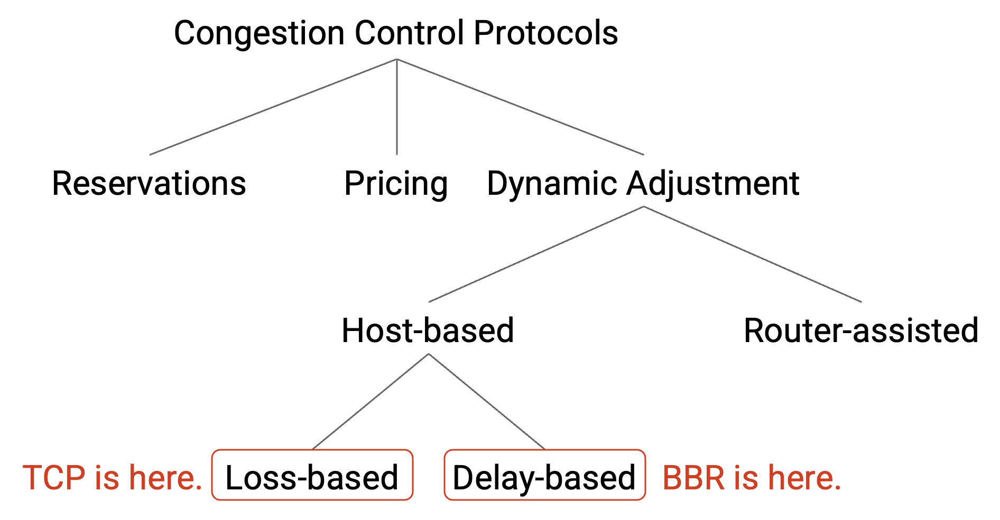
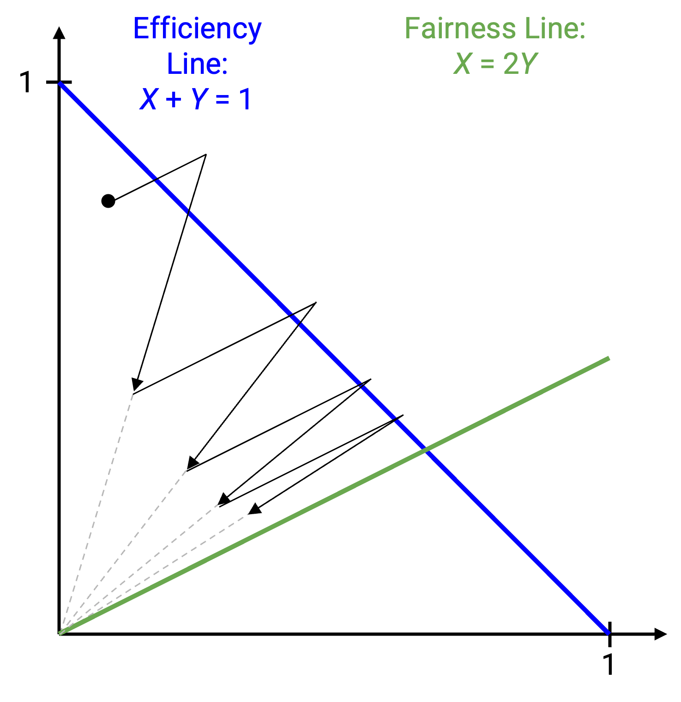

Congestion Control Issues
Confusing Corruption and Congestion
TCP detects congestion by checking for packet loss, but congestion isn’t the only reason packets would be lost. Packets could also be lost from congestion, and TCP cannot distinguish between loss due to corruption or congestion. If a packet is corrupted, TCP will still drop its rate, even if the network isn’t congested.
We can also see this in our equation, which related throughput to loss rate. The throughput and loss rate are inversely proportional, even for non-congestion losses. The equation can be helpful for estimating how a lossy link (e.g. a wireless link that frequently corrupts packets) would affect TCP.
Short Connections
Most TCP connections in real life are very short-lived. 50% of connections send fewer than 1.5 KB, and 80% of connections send less than 100 KB. Very few packets (maybe only one) are sent during these connections.
Suppose we had a connection where the sender only had 3 packets to send. What would TCP congestion control do? We’d start with window size 1 and send the first packet. Then, we’d wait for the ack, increase the window size to 2, and send the remaining two packets. Then, we’d wait for two more acks, and finish.

This connection took two RTTs to send 3 packets, resulting in an incredibly low throughput (1.5 packets per RTT).
More generally, these short connections never leave the slow-start phase, and never reach their fair share of bandwidth. This causes short connections to suffer from unnecessarily long transfer times.
Another problem with short connections is handling loss. Recall that we detect loss when there are 3 duplicate acks, but in a short connection, we might not have enough packets to trigger these duplicate acks. For example, if we had 4 packets to send, and we lost the second packet, we’d never get 3 duplicate acks. Instead, we’d have to wait for the timeout to trigger. At typical real-world timeout values of roughly 500ms, this can also cause short connections to take unnecessarily long.
How can we fix both of these problems? One partial fix is to start with a higher initial window (e.g. 10 packets instead of 1). Now, connections with 10 or fewer packets can just send all the data at the start of the connection.
TCP Fills Up Queues
TCP detects congestion using loss, and the congestion control algorithm deliberately increases the rate until triggering loss. In order to trigger loss, queues need to fill up. This means that TCP introduces queuing delays throughout the network, and the delays affect everybody in the network.
Suppose we had one heavy-duty connection transferring a 10 GB file, and later, we start a small connection transferring a single packet. Both the connections share the same bottleneck link. The heavy-duty connection will increase its rate until the bottleneck link’s queue fills up. Now, when the small connection starts, it is stuck waiting in the queue, behind the heavy-duty connection packets.
This problem is made worse if routers keep extremely large queues. Routers having excessive memory for long queues is called bufferbloat. An example of bufferbloat occurs in home routers, which might have a huge queue, but very few connections (only the ones in your home) using that queue. Now, any connections you make will cause large queuing delays for other connections.
To avoid queues filling up, we could find a way to measure congestion that doesn’t involve deliberately triggering losses. In particular, we could detect congestion when the RTT starts increasing, which indicates delay. This is the idea behind Google’s recent BBR algorithm (2016). The sender learns its minimum RTT, and decreases its rate if it starts noticing the RTT exceeding the minimum.

Cheating
There is nothing enforcing that senders have to follow the TCP congestion control algorithm. Senders could cheat to get an unfairly large share of the bandwidth.
For example, a sender could increase the window faster (e.g. +2 every RTT, instead of +1). If we applied our graphical model to one cheating sender and one honest sender, AIMD updates would actually converge on a bad fairness line where the cheating sender gets twice the bandwidth of the honest sender.

Many other ways to modify the protocol also exist, such as starting with very large initial congestion window.
In practice, because TCP is implemented in the operating system, in order to cheat, the sender would have to modify the code in their operating system, which the vast majority of Internet users don’t do.
If a small number of senders abuse the system, those senders will get more bandwidth. If a large number of senders abuse the system (e.g. Microsoft releases a version of Windows that abuses TCP), the millions of Windows users are still competing with each other, and it’s unlikely that anybody will end up with more bandwidth.
Another way to cheat, without modifying TCP, is to open many connections. TCP only ensures that each connection gets a fair share. If a cheating sender opened 10 connections and an honest sender opened 1, the cheating sender would get 10 times more bandwidth. Many applications intentionally open more connections to improve bandwidth.
If cheating is possible, why hasn’t the Internet suffered another congestion collapse? It turns out, researchers don’t really know the answer either. One possibility is: cheaters who modify the congestion control algorithm might get an unfair share of bandwidth, but if they’re still following the principles of congestion control (e.g. reducing rate when loss occurs), then they aren’t overwhelming the network. By contrast, in the original 1980s congestion collapse, senders kept re-sending packets at high rates, with no notion of adjusting rate.
If cheating is possible, how much cheating occurs in practice? Again, we don’t really know. It’s hard to measure cheating (e.g. you don’t know the windows being used at every sender).
Congestion Control and Reliability are Intertwined
The mechanisms for congestion control and reliability are tightly coupled. As we saw, congestion control was implemented by taking the code for TCP reliability and tweaking a few lines of code.
We can also see this dependence in the algorithm itself. The window is updated on acks and timeouts because the reliability code was written to respond to those events. We detect loss with duplicate acks because the reliability implementation uses cumulative acks.
Combining reliability and congestion control is a design choice. One benefit is that congestion control was a small code patch that could be widely deployed in response to the 1980s congestion collapse. However, since then, the combination of the two features has complicated evolution of our algorithms. For example, if we wanted to change something about our congestion control algorithm, we’d likely have to change the code for reliability as well. Or, if we wanted to change the reliability implementation (e.g. change from cumulative to full-information acks), we’d have to update congestion control as well.
From a design perspective, this is a failure of modularity, not layering. Congestion control and reliability are operating at the correct layer of abstraction (transport layer). However, within the transport layer, we haven’t cleanly separated different functionality into different parts of our code.
Because congestion control relies on reliability, it’s hard to achieve congestion control without reliability. Some applications (e.g. video streaming) might not want reliability, but still want congestion control. But there’s no way to disable reliability and keep only congestion control.
Likewise, it’s hard to achieve reliability without congestion control. For example, if we had a lightweight connection that sent one packet every 10 minutes, we probably don’t need congestion control for this connection. But we can’t easily disable congestion control for only some connections.